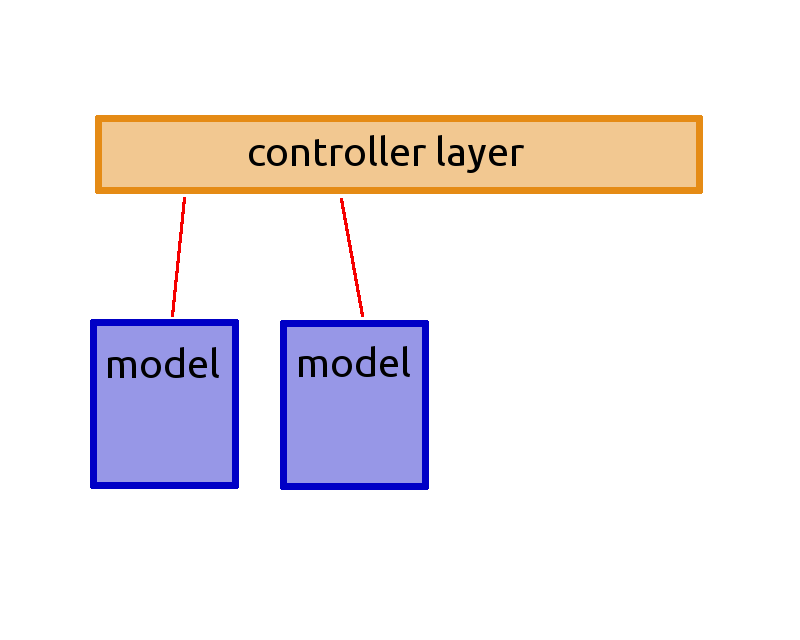

Unleash Postgresql features in your PHP developments
Created by Grégoire HUBERT / @chanmix51
About Me

- Grégoire HUBERT @chanmix51
- Author of Pomm
- Founder of PragmaFabrik
- joind.in https://joind.in/12955
There is a (r)evolution going on
- Python / Ruby / Js are racing at supporting Postgresql features
- Play2 (ANorm) / .NET (LinQ) / Java (JOOQ) alternative to ORM
There is a (r)evolution going on
Why is it important ?
- Business oriented applications
- ➥ complex models
- ➥ complex queries
- ➥ complex interactions
- Model driven developments
Tools matter

SQL has been made for that !
- ➥ First version in 1974 (IBM)
- ➥ 8 ISO revisions since 1986
- ➥ CTE (SQL99)
- ➥ Window functions (SQL 2003 & 2008)
- ➥ Even XML (SQL 2003 & 2008)
Declarative language
Wikipedia definition says:- ➥ Express the what not the how.
- ➥ No side effects.
- ➥ Clear correspondance to mathematical model.
Postgres
- ➥ Fully supports SQL2008
- ➥ Procedural languages (Perl/Python/R/JsV8…)
- ➥ Namespaces
- ➥ Complex types (inet, ts_vector, points, array, hstore, json…)
- ➥ Foreign data wrappers
- ➥ Asynchronous messaging system
- ➥ Extensible
Tools matter
How to use it efficiently ?

Pomm: a take on ORM limitations
- ➥ Do not enforce OO in relational
- ➥ Do not use database abstraction
Defining structure in a class
- ➥ Does not define data structure where it is the more constrained.
- ➥ Hard coupling between projection and class definition.
Structure definition by constraint
- ➥ Types are constraints
- ➥
NOT NULL,UNIQUE… - ➥
CHECKmakes your data consistent. - ➥ Structuring data is business logic in the database.
Relax !
Coupling projection and class
- ➥ Means
SELECT * FROM … - ➥ No distinction between technical and business data.
- ➥ Turns the database into an entity database.
Coupling projection and class
Defining an entity
Coupling projection and class
Turns the database into an entity store

Coupling projection and class
In which the relational db has poor added value
The power of the projection

The power of the projection
<?php
$pomm = require __DIR__.'/.pomm_cli_bootstrap.php';
$student = $pomm['my_db']
->getModel('\MyDb\PublicSchema\StudentModel')
->findByPK(['student_id' => 1])
;
print json_encode($student->extract());
The power of the projection
{
student_id : 1,
first_name : linus,
last_name : torvalds,
login : linus,
password : $1$.ZypdL0E$YddOp4JpO76z3Dig9.QZB.,
birthdate : {
timezone : Europe/Paris,
date : 1968-12-28 00:00:00,
timezone_type : 3
},
section : 4A3
}
SELECT s.student_id, s.first_name, … FROM student s WHERE …
The power of the projection
<?php // StudentModel.php
//…
public function createProjection()
{
return parent::createProjection()
->unsetField('password')
->unsetField('birthdate')
->setField('age', 'age(%birthdate)', 'interval')
;
}
The power of the projection
{
student_id : 1,
first_name : linus,
last_name : torvalds,
login : linus,
section : 4A3,
age : {
weekday : 0,
special_type : 0,
…
y : 45,
…
}
}
SELECT student_id, …, age(s.birthdate) as age, … FROM student s WHERE …
The power of the projection
<?php
$pomm = require __DIR__.'/.pomm_cli_bootstrap.php';
$student = $pomm['my_db']
->getModel('\MyDb\PublicSchema\StudentModel')
->deleteByPK(['student_id' => 1])
;
print json_encode($student->extract());
DELETE FROM student WHERE … RETURNING student_id, …
Projection driven REST API
public function deleteStudentController($id)
{
$student = $this->getService('pomm')['my_db']
->getModel('\MyDB\PublicSchema\StudentModel')
->deleteByPK(['student_id' => $id])
;
if (!$student) {
throw new NotFound404Exception(
sprintf("No such student id = '%s'.", $id)
);
}
return new JsonResponse($student->extract());
}
Queries and types
Some types supported by Postgresql
- ➥ boolean, bitchar, bitvar
- ➥ strings, uuid, xml, json, inet
- ➥ numbers, timestamps with time zone, intervals
- ➥ integer and timestamps, ranges
- ➥ point, circle, segment, box, polygon
- ➥ HStore, LTree, ts_vector, bytea
- ➥ custom types, objects
- ➥ arrays of all the types above
- ➥ Enter your type here
Types converted by Pomm
- ➥ boolean,
bitchar,bitvar - ➥ strings, uuid, xml, json, inet
- ➥ numbers, timestamps with time zone, intervals
- ➥ integer and timestamps, ranges
- ➥ point, circle, segment,
box,polygon - ➥ HStore, LTree, ts_vector, bytea
- ➥ custom types, objects
- ➥ arrays of all the types above
- ➥ Enter your type here
The power of the conversion
UUID are your friends
- How do you recognize a friend ?
- ➥ He is unique !
- ➥ No more sequences and ID collisions
- ➥ No more temptation to sort by ID
Timestamps with timezone
- How to compare timestamps from different locations ?
- ➥ 1° Assume the world is flat (easy).
-
- ➥ 2° Use timestamptz (as easy as above)
Ranges
- ➥ What is the next session in this room ?
- ➥ Does an electronic component comply ?
Ranges
create table room_reservation (
room_id uuid not null,
schedule tsrange not null,
…
exclude using gist (cast(room_id as text) with =, schedule with &&)
)
Inet type
$computers = $session
->getModel('\Application\NetworkSchema\ComputerModel')
->findWhere('interface << $*', ['192.168.101.1/24'])
;
Arrays of…
$computers = $session
->getModel('\Application\NetworkSchema\ComputerModel')
->findWhere('$* >> any (interfaces)', ['192.168.101.1/24'])
;
Geometric types
- ➥ Complete function set
- ➥ Point, Circle, Segment, Box, Polygon
- ➥ Operators to test intersection, parallelism, alignments etc.
- ➥ Operators to test containment, lenght, translation, rotation etc.
Geometric types
$stations = $session
->getModel('\Application\BikeSchema\StationModel')
->findWhere(
'circle(point($*, $*), $*) @> position',
[
$latitude,
$longitude,
$radius,
]
);
HStore
- ➥ Dictionnary in a database
- ➥ great tool for I18N when coupled with projection
- ➥ Can store strings only
JSON
select row_to_json(notification) from notification;
┌───────────────────────────────────────────────────────
│
├───────────────────────────────────────────────────────
│ {"notification_id":3,"name":"observer","data":{"messag…
│ {"notification_id":4,"name":"observer","data":{"messag…
│ {"notification_id":5,"name":"observer","data":{"messag…
│ {"notification_id":6,"name":"observer","data":{"messag…
└───────────────────────────────────────────────────────
Complex types
select notification from notification;
┌─────────────────────────────────────────────
│
├─────────────────────────────────────────────
│ (3,observer,"{""message"":""pika"",""pid"":1"…
│ (4,observer,"{""message"":""pika"",""pid"":1"…
│ (5,observer,"{""message"":""pika"",""pid"":1"…
│ (6,observer,"{""message"":""pika"",""pid"":1"…
└─────────────────────────────────────────────
- Defining a table in Postgres is defining a type
SQL in 2014
SQL has poor reputation
- ➥ Uneasy because stateless
- ➥ Hard to read when complex
- ➥ Tiedous to maintain list of fields
But SQL has got kicking ass features
- ➥ Declarative paradigm
- ➥ Transform sets of tuples
- ➥ Common traits with functionnal programming
Common Table Expressions (SQL99)
before
select
…
from a_table
join (select … from another_table where …)
…
- ➥ Complex to maintain
Common Table Expressions (SQL99)
after
with
set_a (field1, …) as (select … )
select field1, … from a_table
join set_a using (a_field)
where …
Common Table Expressions (SQL99)
A bit more complex
with
set_a (field1, …) as (select … ),
set_b (field1, …) as (select … ),
set_c (field1, …) as (select … from set_b join set_a using (a_field) where …)
select
field1,
…
from
some_table
join set_c using (a_field)
where …
Common Table Expressions (SQL99)
writeable
with
set_a as (delete from a_table returning *)
insert into another_table select … from set_a returning *;
Common Table Expressions (SQL99)
recursive
with recursive
set_a as (
select … from something
union all
select … from set_a
)
select … from set_a where …
Window functions
Functions on windows of data
select
…,
rank() over (partition by country order by production desc) as ranking,
Window functions
Be able to propose a link to next and previous blog articles.
select
slug,
lag(slug) over published_at_wdw as next_slug,
lead(slug) over published_at_wdw as prev_slug
from
blog_post
window
published_at_wdw as (order by published_at desc)
Sorry, we won't talk about…
- ➥ Transactionnable DDLs
- ➥ Materialized views
- ➥ Full text search
- ➥ Procedural languages
- ➥ Indexes
- ➥ And so much more…
How to hug an elephant ?
- Organize the code
- Speak SQL
Organize the code
Organize the code
Modelmap projection with a flexible entityModelcan be auto generated by inspecting the databaseModelsupport Postgresql relation multiple inheritance
Organize the code
Model class
<?php
namespace Model\Blog\PublicSchema;
//…
class ComputerModel extends Model
{
use WriteQueries;
public function __construct()
{
$this->structure = new ComputerStructure;
$this->flexible_entity_class = "\Model\PommProject\PommSchema\Computer";
}
Speak SQL
public function findBySlugWithNeighbours($slug)
{
$sql = <<<SQL
with
neighbour as (
…
)
select
:news_fields
from
:news_table
left join neighbour n using (slug)
where
news.slug = $*
SQL;
Organize the code
Organize the SQL & code

Postgresql is the database
of the future
- 5 years to get stable version
- 5 years to comply to SQL standard
- 5 years to be enterprise ready
- And innovating since then !
Pomm: 5 years of Postgres
- sfPgLookPlugin (2010)
- Pomm (2011 - 2015)
- Pomm2 (2015 - ?)
- Pragmatic, efficient, easy
You can join us !
- Play with Postgres
- Its documentation is heaven
- Ported by a very open and talented community
- Play with Pomm2
- Your experience is very valuable
- Help us to make the best tool for database in PHP
Thank you
- joind.in https://joind.in/12955
- twitter @chanmix51, @PommProject